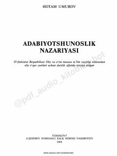

ANOliy o'quv yurtlari uchun adabiyotshunoslik nazariyasidan fundamental darslik.
Ushbu darslik oliy o'quv yurtlari filologiya fakulteti talabalari uchun mo'ljallangan bo'lib, badiiy adabiyotning nazariy asoslari, janrlar va ijodiy jarayon qonuniyatlarini qamrab oladi. Kitobda adabiyotshunoslik fanining predmeti, metodologiyasi hamda badiiy asar tahlili bo'yicha fundamental ma'lumotlar bayon etilgan.